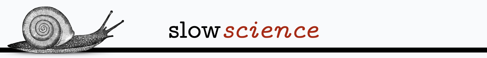

Publishplenty premature papers, or perishpreparing principled progress?
Slow and steady wins the race
Slow science is a recent term to promote a stronger focus on solid, curiosity-driven research instead of quick and sloppy works to evade the "perish" part of the "publish or perish" paradigm. Fast science like fast food, is on first glance very appealing as things we want happen quickly, but that comes at the price of quality and thereby our health.
As with fast food, the motivation is in part due to laziness. Instead of evaluating research works based on their merit, it is a lot easier to count things such as publication numbers or citations.
Thus, hungry researchers go for the high score.
Why do authors publish so many papers?
It is easier than focusing on fewer more substantial works:
Randomness in peer-review favours quantity of submissions over quality
Plenty of exotic problems or problem variations that are easy to solve
Appearance of substance can be achieved by overcomplicating things
Substantial works are more disruptive and tend to meet more opposition
Akin to politics, support for a paper can be garnered with promises
There are various incentives:
Authors with many papers on a subject are perceived as experts
Career progression can be tied to quotas
More papers means more say on which authors receive most citations
There are no penalties:
Padding a research portfolio never hurts
The true scientific value of a paper is hidden away from plain view
Do authors perish if they focus on fewer, but more substantial works?
In some disciplines authors have the option of targeting more selective venues that
set higher standards for quality, which can then be prestigious. Yet many of the previously issues remain.
The selectivity of the venues may also not be very well known and the prestige only extend to certain subcommunities.
Matters are made worse that it is completely subjective, e.g., only looking at acceptance
rates of a venue indicates very little about their quality.
How could well-intentioned researchers be helped?
Try to make reviewing in selective venues less random
Prioritise quality over quantity
Consider both the best and worst publications in a research portfolio